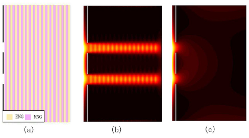

Self-collimations are found in one-dimensional (1D) photonic crystals consisting of two kinds of single-negative materials that effectively cancel each other out. Compared to the self-collimations in all-dielectric photonic crystals or 1D photonic crystals with negative-index materials, this kind of structure can amplify both far and near fields greatly during collimation.
Fig.1 The distributions of electrical field show that two narrow beams are well separated and collimated in the structure (b) while extended and mixed in air (c).